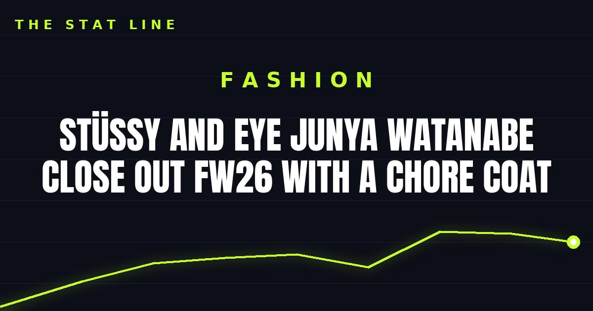

Stüssy and eYe Junya Watanabe close out FW26 with a chore coat
A navy heavyweight oxford coverall with an orange embroidered Stüssy chest logo, ¥132,000, dropping Friday — sold only through an advance lottery at COMME des GARÇONS Aoyama and Osaka.

Disclosure: this post contains affiliate links. I earn a commission on qualifying purchases.
The final piece
An orange embroidered Stüssy logo and a Tokyo Los Angeles 2026 graphic carry the chest of the navy heavyweight cotton-oxford coverall — the closing piece of the Stüssy and eYe Junya Watanabe FW26 run.
The details
• The piece: navy heavyweight cotton-oxford coverall, embroidered orange Stüssy logo on the chest, Tokyo Los Angeles 2026 graphic
• Release date: Friday, October 16
• Price: ¥132,000
• How to buy: advance lottery only, at the COMME des GARÇONS Aoyama and Osaka stores
• Entry deadline: Monday at 11:59 p.m.
Read the full release breakdown at Hypebeast.
Why it matters
Lottery-only, two stores, ¥132,000 — this is the rarest kind of collab release. The orange-on-navy embroidery is the loudest Stüssy branding of the whole FW26 partnership, which usually keeps its logos discreet. If this drop is on your radar, the only path in is the lottery, and the clock runs out Monday night.
Watch
Source: "Junya Watanabe Man Fall / Winter 2026" — Titre Provisoire. The full FW26 runway presentation, which lists the Stüssy collaboration ("Stüssy American traditional wear project") among its main partnerships — the season this closing chore coat caps off.